在自租云服务器上部署
Mist对所用计算机设备的 显存要求 较高。在本地计算机无法达到要求时，用户 可以考虑从GPU云服务商租用带有GPU显卡的云服务器。本部分将提供在云服务器上部署Mist的教 程。
本教程将首先简单介绍GPU云服务器，然后分不同的云服务商介绍如何租用云服务器，最后介绍 如何在租用的云服务器上安装和使用Mist。
什么是GPU云服务器
GPU云服务器可以理解为可供用户远程使用的带 有显卡的计算机。这些计算机的实体安装在云服务商的计算中心，但可以允许用户通过远程命令行 （常见）、远程屏幕（少见）等方式向其发送命令，从而在上面执行特定的计算任务 （比如运行Mist）。
云服务器按设备规格不同分成不同价格档次，计时向用户收费。以下图的界面为 例。RTX A6000拥有超大的显存容量，其价格也高于RTX 3090等显卡。因此，RTX A6000的租用价格 更高。
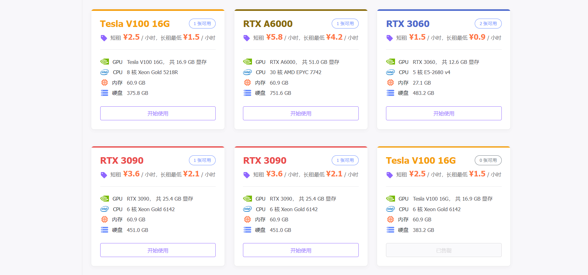目前，大规模云服务商（例如：阿里云）提供的服务器一般机器档次较高，且多被用于训练大模型。 与此相对，中小服务商的服务器档次更加多样化。用户可根据需求选择合适的服务器租用。 因此，我们选择基于featurize和AutoDL这两个中小型GPU云服务商展开本教程。
注意：这不意味着我们推荐使用本教程涉及的云服务商，更不意味着 使用其他云服务商提供的服务器则无法运行Mist。 我们鼓励用户在理解云服务器使用的基本方法后，尝试不同的云服务商。
云服务器部署的关键问题
命令行终端：和使用图形化界面（桌面）操作的家用计算机不同，云服务器是通过命令行来操作的，即通过输入特定格式的文本给计算机下达指令。命令行终端即为接收这个命令行的窗口。例如，在终端中输入“cd work”，终端就会尝试在当前所在的文件夹下搜索一个叫work的文件夹，并进入其中。
简单终端命令：查看当前文件夹下的文件：
ls；进入当前文件夹内、名为XX的文件夹：cd XX；回到上一级文件夹：cd ..；创建一个新的空文件夹XX：mkdir XX用完记得马上关机：云服务器按时计价，且单价非常昂贵。因此，用户一般只在执行具体的计算任务时会启动云服务器，结束任务后则马上关闭。否则，将造成大量资金浪费。这点是云服务器和个人电脑在使用上最大的区别。
环境持久化：在云服务器上重新安装Mist需要的时间约为半小时。因此，我们希望Mist能在服务器上长期留存，不需要每次使用都重新安装。然而，云服务器是按租用时间收费的，且单价昂贵。如果一直让其保持开机状态，会造成很大浪费。所以，我们希望在关掉云服务器时，Mist能保存在某处，待下次开机时仍能直接使用。
在featurize上部署Mist
在featurize上部署Mist要求用户自行下载Mist的代码并安装运行环境，其部署步骤较为繁琐。 但可以更好地展示Mist安装所需的全过程。
租用featurize服务器
访问 featurize 主页，点击“开始使用”
跳转页面将出现一个可租用的GPU服务器的列表。其中，每个服务器均标有其显存大小。用户可 结合Mist的设备 显存要求 文档选择合适的GPU服务器。在选择服务器之前 用户须先通过页面右上角的按钮注册或登录。
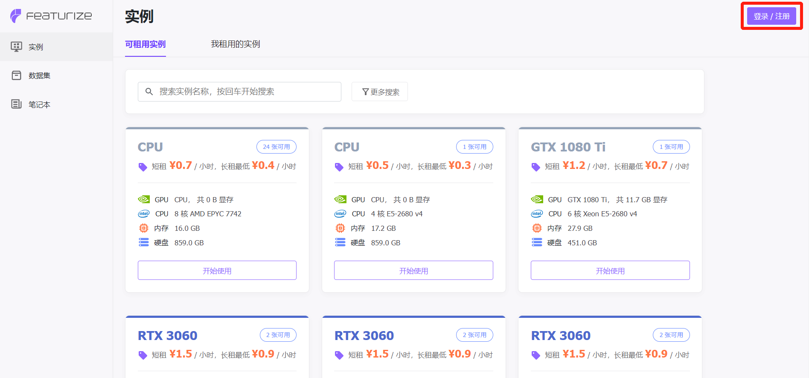这里，我们以显存约16GB的RTX A4000服务器为例。点击“开始使用”
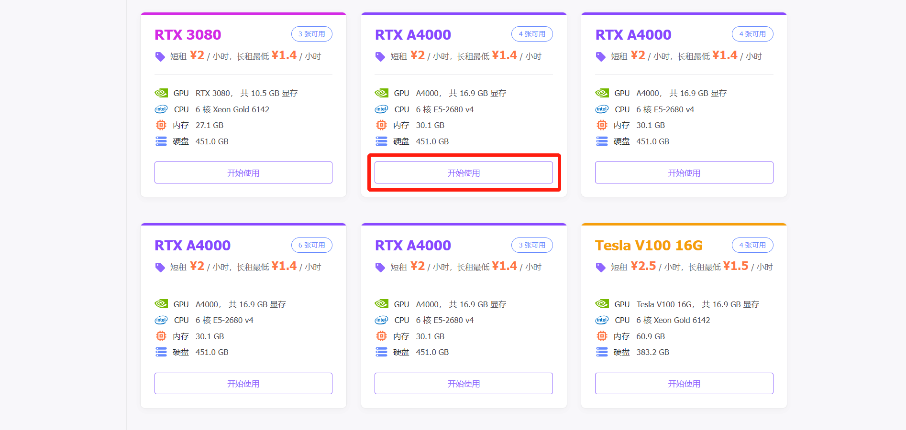设置使用默认配置即可，点击“开始使用”。
在主页面中切换到“我租用的实例”一栏，发现下面出现了新租用的实例“A4000”。等待两分钟 至其开机完毕，点击“打开工作区”。
浏览器中将新弹出一个jupyter notebook页面，点击该页面，显示如下：
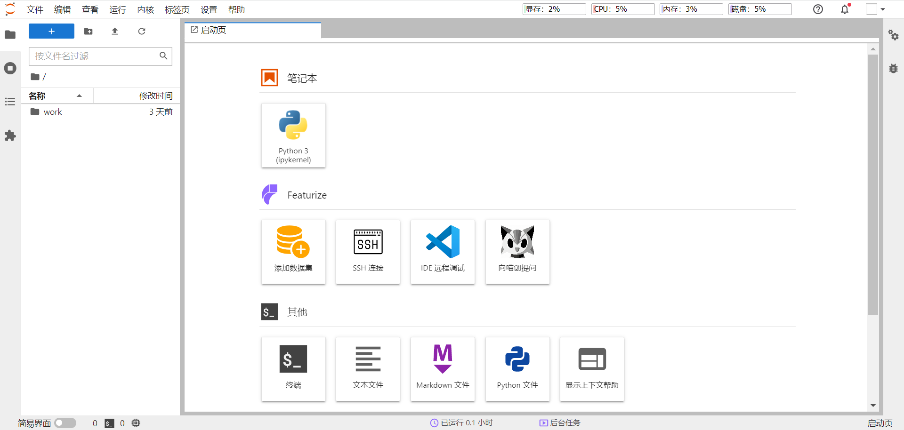点击屏幕下方的“终端”，打开一个命令行终端。到此完成在featurize上租用云服务器的基本工作。
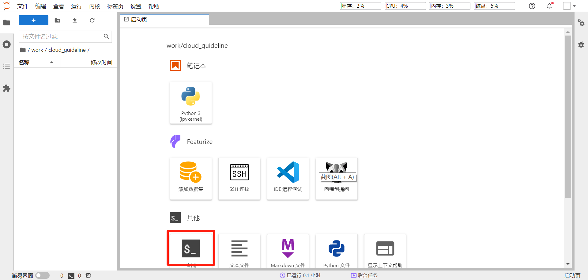下面简单介绍featurize云服务器的使用界面：左侧（黄框内）是文件访问区，可以直接通过鼠标打开 不同的文件；右侧（红框内）是文件操作区，可以查看、编辑打开的文件，也可以通过命令行终端 向服务器发送命令，让其执行特定的计算任务。
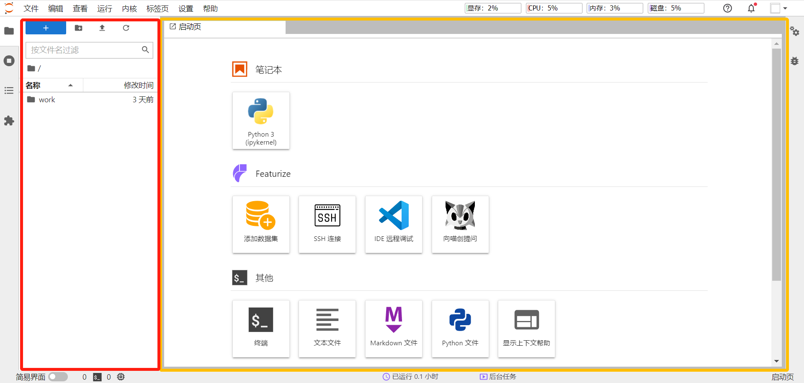安装Mist及其运行环境
在命令行终端中输入以下命令，进入work文件夹：
cd work
featurize的云服务器中，只有work文件夹下的文件会在关闭云服务器（退还实例）后永久保存（但超过30G要计费）。 因此，Mist本身及安装环境必须放置于work文件夹及其子文件夹下。下图中选择在work文件夹中新建一个cloud_guideline 文件夹，并进入其中。实际操作中，您可以直接在work文件夹下操作。您可以通过终端中亮蓝色的字体判断所处的文件夹。
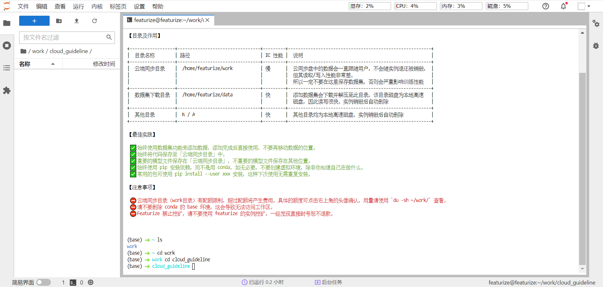在命令行终端中输入以下命令，从GitHub上下载Mist的代码：
git clone https://github.com/mist-project/mist.git
出现下图则表示下载成功。
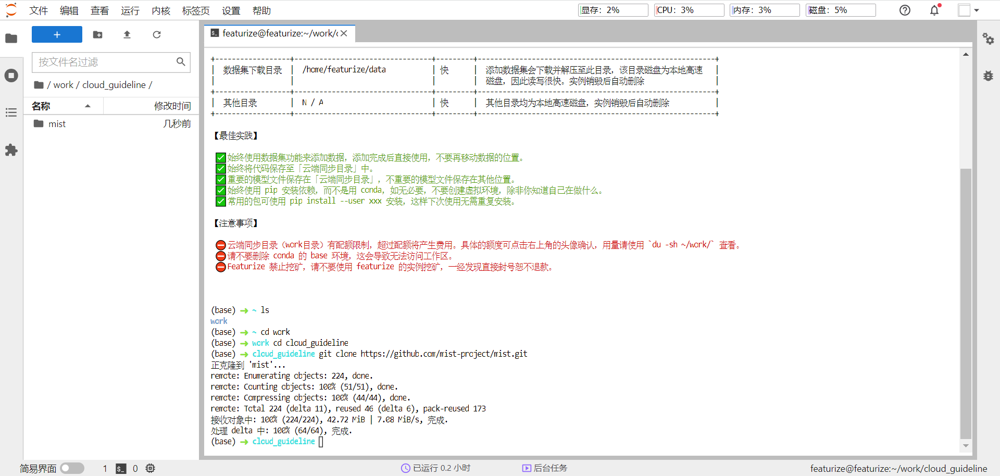再进入Mist文件夹，并安装Mist所需的运行环境：
cd mist
conda env create -f environments.yml -p ../env/
命令行终端中的信息输出如下图：
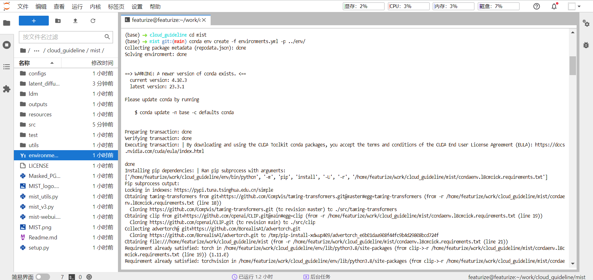命令行终端中输出停止时，应如下图所示。其中，红框给出了激活Mist运行环境的命令。也就是说，每次运行Mist都需要先在命令行终端中输入这条命令，激活Mist运行环境。
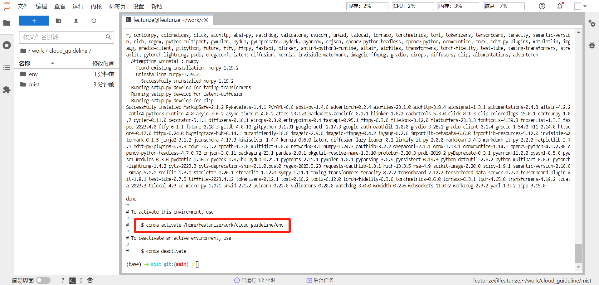如上所述，在命令行终端中输入这条命令以激活环境：
conda activate /home/featurize/work/cloud_guideline/env
注意，这条命令可能会随您放置Mist的文件夹地址变化而变化，请以输出的命令为准。例如，如果您的文件夹是work， 那么，这条命令是：
conda activate /home/featurize/work/env
同时，您需要在重新安装一个软件包pillow。在命令行终端输入以下命令：
pip install --force-reinstall pillow
现在，您应该仍然在mist文件夹中。此时，输入以下命令以获得Mist所用模型：
wget -c https://huggingface.co/CompVis/stable-diffusion-v-1-4-original/resolve/main/sd-v1-4.ckpt
获取模型后，在mist文件夹下，输入以下命令将模型文件移到指定位置：
mkdir -p models/ldm/stable-diffusion-v1
mv sd-v1-4.ckpt models/ldm/stable-diffusion-v1/model.ckpt
至此，Mist及其运行环境已安装完毕。可参考本页后续章节“在云服务器上使用Mist”中的步骤启动Mist。
在AutoDL上部署Mist（推荐）
相比featurize，在AutoDL上部署Mist的步骤更为简洁。这是因为我们在AutoDL上上传了包括 Mist代码和运行环境的镜像（可以理解为一个小型操作系统）。用户 只需要在AutoDL上租用服务器并在其中加载我们的镜像，即可使用Mist的功能。因此，我们推荐 国内的用户使用AutoDL作为云服务部署平台。
租用AutoDL服务器
访问 AutoDL 主页，点击右上角登录。
登录之后，点击右上角“控制台”，进入下图所示的界面。点击左边栏中的“容器实例”。
点击“租用新实例”。
进入云服务器租用界面。可以看到上方黄框处可选择不同的服务器档次。其中，3090和A5000均可满足 Mist较高配置的需求。这里，我们选择A5000。下方黄框处显示所选云服务器的显卡显存。比对Mist 的 显存要求 表可知，24G确实可以满足大部分的需求。
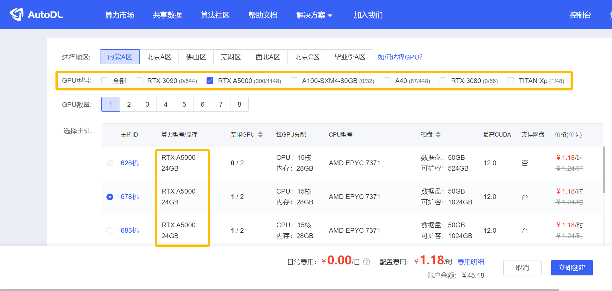下拉租用界面，在镜像选择处输入mist，点击下拉列表，选择图中所示的镜像。再点击右下角的 “立即创建”。
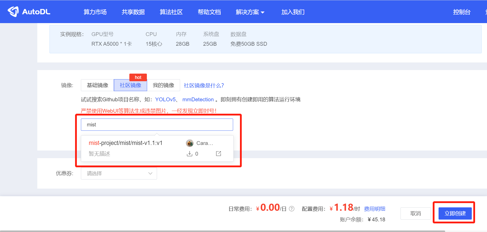等待一段时间后，云服务器实例将创建完成，点击右侧的“JupyterLab”进入云服务器使用界面。
这一界面与上面featurize部署步骤中的云服务器使用界面几乎完全一致。不同的是，云服务器已经 安装好了Mist及其运行环境。用户仅需要在命令行终端中输入以下命令：
cd mist
conda activate /root/env
即可以进入Mist所在文件夹并激活Mist的运行环境。此后，可遵照下一章节“在云服务器上使用Mist”的步骤启动Mist的功能。
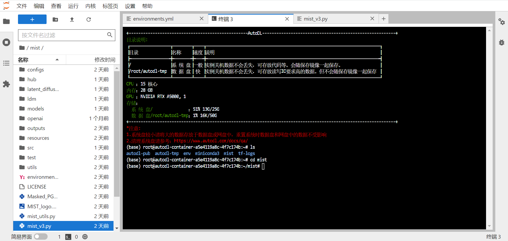 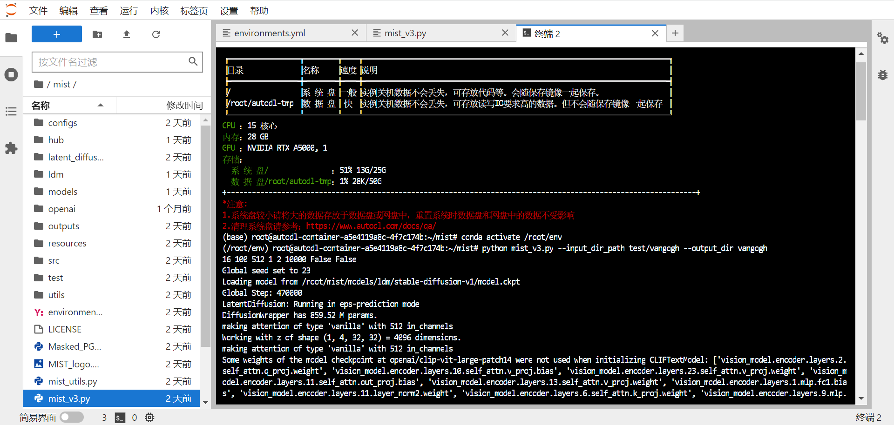在云服务器上使用Mist
在mist文件夹下，启动Mist的命令为：
python mist_v3.py --input_dir_path INPUT_DIRECTORY --output_dir OUTPUT_DIRECTORY
其中，INPUT_DIRECTORY为需要Mist处理的图片的所在文件夹的相对地址（相对于mist文件夹）， OUTPUT_DIRECTORY为Mist处理后的图片的存放文件夹在output/dir文件夹下的名字。这两个 参数 均需要通过前缀（分别是–input_dir_path和–output_dir）来标明。
以下面的命令为例：
python mist_v3.py --input_dir_path test/vangogh --output_dir vangogh
该命令指示Mist从当前文件夹（mist文件夹）的子文件夹test/vangogh/下读取所有图片，并进行加噪 处理。
处理后的图片将放置在mist文件夹的下子文件夹output/dir中如下图所示的位置。
除了输入图片、输出图片所在的文件夹（INPUT_DIRECTORY，OUTPUT_DIRECTORY）以外， Mist还接收多个不同的变量作为处理图像时的参数。将这些变量加入Mist启动命令的方法类似上面 所写，先将参数的前缀接在启动命令后面，再将参数的值接在前缀后面。
例如，如需指定Mist的加噪强度epsilon为16，相应的Mist启动命令为：
python mist_v3.py --input_dir_path test/vangogh --output_dir vangogh --epsilon 16
除了图片输入和输出的位置这两个参数外，其他参数均有默认值。在下表中，我们给出了和Mist的功能 使用相关的一系列参数的信息。用户可参照 参数 底部表格中的WebUI参数表格理解、 使用这些参数。
参数前缀 |
推荐值（默认值） |
备注 |
|---|---|---|
–epsilon |
16 |
定义参考WebUI参数中的Strength，取值也与之相同； |
–steps |
100 |
定义参考WebUI参数中的Steps，取值也与之相同； |
–input_size |
512 |
定义参考WebUI参数中的Output size，取值也与之相同； |
–rate |
1 |
定义参考WebUI参数中的Fused Weight，取值也与之相同； |
–block_num |
1 |
定义参考WebUI参数中的LowVRAM Mode（低显存模式）；此处，1为关闭，2为启动。 |
将本地图片上传至云服务器
如果用户需要将自己的图片上传至云服务器，可在云服务器的使用界面点击左上角的“上传文件”按钮。
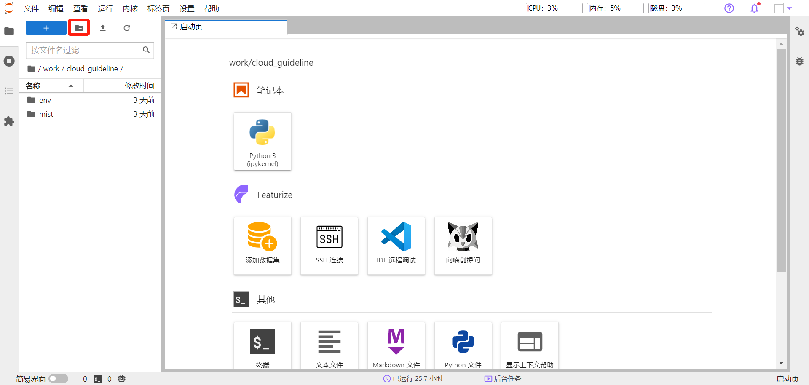